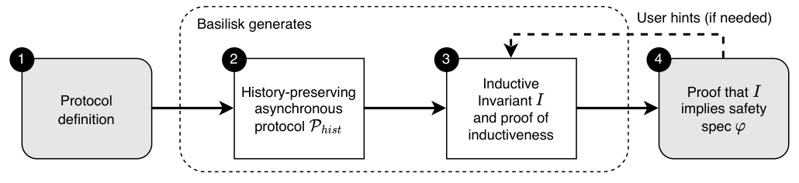
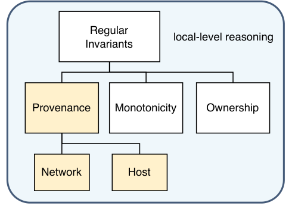
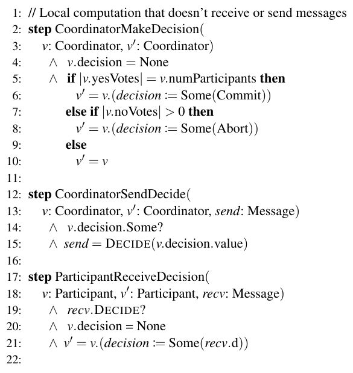
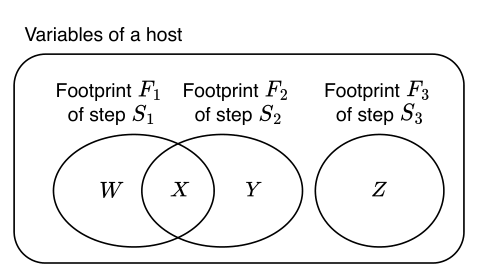
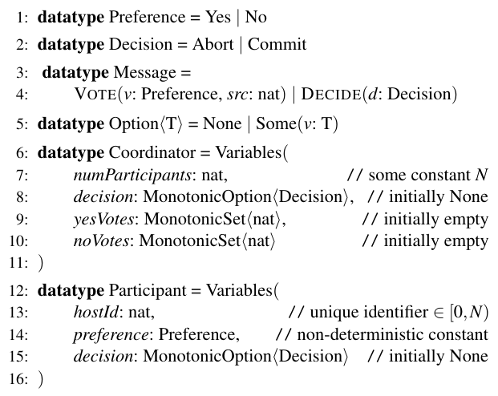

Basilisk: Using Provenance Invariants to Automate Proofs of Undecidable Protocols
This page was written by an AI model to give a high-level overview of the paper. Please check the paper for detail: USENIX.
Proving a distributed protocol safe (for example, that no two nodes hold a lock at once) almost never follows directly from the safety property itself. The developer must instead find an inductive invariant I: a stronger property that implies safety, holds in every initial state, and is preserved by every protocol step. In an undecidable logic, finding I is a creative, iterative process: guess a candidate, try to prove it is preserved, fail, refine, and repeat. The IronFleet project reportedly spent months on this loop for Multi-Paxos alone.
Two families of prior work attack this burden. One line of tools automates invariant inference completely, but only for protocols written in a decidable fragment of logic such as EPR (effectively propositional reasoning), which forbids common patterns like arithmetic and is itself hard to translate a protocol into. The other line, exemplified by the paper's direct predecessor Kondo, works in a fully expressive, undecidable logic and automates a useful slice of "Regular Invariants" (add-only Monotonicity Invariants, exclusive-resource Ownership Invariants, and invariants about which steps send a given message) that can be derived by looking at a single host's steps in isolation. But Kondo still asks the developer to manually find and prove the deep inter-host "Protocol Invariants" that require understanding why the protocol works across multiple hosts and steps; for Paxos, this reportedly took experts about 20 hand-derived properties and two person-weeks.
Basilisk's key idea is that these inter-host properties can themselves be expressed as a conjunction of simple, mechanically derivable Provenance Invariants. A Provenance Invariant connects a property of a host's current state to the specific protocol step that caused it, traced through the host's own append-only execution history. A Host-Provenance Invariant says that once a local property becomes true, it must have arisen from one of a small set of steps; a Network-Provenance Invariant says that a message in the network must have been sent by one of a small set of steps at its sender. Chaining the two, a host received message m, and m was sent by a specific step at the sender, recovers relationships between two different hosts' states without the developer ever writing an inter-host property by hand.
To generate Host-Provenance Invariants automatically, Basilisk introduces atomic sharding: it statically estimates which local variables each step may modify, partitions a host's variables into maximal groups ("atomic shards") that are always updated together by the same steps, and derives one Host-Provenance Invariant per shard for free, since a shard that differs from its initial value must have been set by one of its associated steps. Network-Provenance Invariants are generated the same way, per message type. Because execution histories are append-only, every individual Provenance Invariant is trivially inductive, so Basilisk can mechanically prove the whole generated invariant is inductive, leaving the developer only the comparatively easy task of showing it implies safety.
Implemented as roughly 2,000 lines of C# added to the Kondo/Dafny 4.2 codebase, Basilisk is applied to 16 distributed protocols, including Two-Phase Commit, Paxos, Flexible Paxos, Multi-Paxos, Raft leader election, and several lock and sharded key-value protocols. It automatically finds a sufficient inductive invariant for every protocol with zero developer-supplied invariant clauses, versus Kondo, which needed hand-written invariants (up to 20, for Paxos) and could not be feasibly applied to six of the protocols at all. Only 6 of the 64 Host-Provenance Invariants used across the whole evaluation needed a manual hint, and the final proof for every protocol, including Multi-Paxos, verifies in under a minute.

Key takeaways
- An inductive invariant I must imply safety, hold initially, and be preserved by every step; finding I by hand in undecidable logic is the classic bottleneck (IronFleet: months, for Multi-Paxos).
- Kondo automates Monotonicity, Ownership, and message-send invariants, but leaves inter-host "Protocol Invariants" to developer intuition (about 20 hand-derived properties, roughly two person-weeks, for Paxos).
- Basilisk's Provenance Invariants trace a host's current state back to the step that caused it (Host-Provenance) or trace a network message back to the step that sent it (Network-Provenance); chaining the two recovers inter-host properties automatically.
- Atomic sharding statically partitions each host's variables into maximal groups that are always updated together, mechanically generating a correct, trivially inductive Host-Provenance Invariant per group.
- Across 16 protocols, Basilisk finds a sufficient inductive invariant with zero user-supplied invariant clauses in every case, needing only 6 provenance-witness hints out of 64, and verifies in under a minute even for Multi-Paxos.
From invariant taxonomy to a mechanically checked inductive invariant
The invariant-proof burden, Kondo's partial automation, Provenance Invariants, the atomic sharding algorithm, and the Basilisk tool.
1 · Safety properties, inductive invariants, and the proof burden
A safety property ϕ must hold in every reachable state of a protocol's execution. But ϕ is almost never inductive on its own: there typically exist unreachable states that satisfy ϕ yet can transition to an unsafe state. Proving ϕ therefore requires a stronger, inductive invariant I, usually expressed as a conjunction I = I1 ∧ ... ∧ Im, that (1) implies ϕ, (2) holds in all initial states, and (3) is preserved by every protocol step.
Without automation, the developer finds I through an "invariant-proof loop": propose a candidate invariant, attempt to prove it inductive, fail, use the failure to refine the candidate, and repeat. This is reported to be extremely labor intensive; in frameworks like IronFleet that require this process entirely by hand, the authors report spending months to find and prove an inductive invariant for Multi-Paxos.
2 · Kondo's taxonomy and the gap it leaves

Kondo, the paper's direct predecessor, splits invariants into two top-level classes. Protocol Invariants are inter-host or intra-host properties that say nothing about the network; Kondo requires the developer to manually derive and prove these. Regular Invariants are local properties, derivable by examining a single host's steps in isolation: Monotonicity Invariants (capturing add-only data types such as grow-only sets or append-only lists), Ownership Invariants (capturing exclusive ownership of unique resources), and invariants about which steps send a given message. Kondo automates all of the Regular Invariants.
The gap is that the conceptually hardest properties, the ones spanning multiple hosts and multiple steps, fall entirely into the Protocol Invariant category and are left to the developer's intuition. Basilisk's goal is to shrink this gap by introducing Provenance Invariants, a new class of Regular Invariant that can express what Kondo's Protocol Invariants previously required by hand.
3 · Running example: Two-Phase Commit

The paper grounds its definitions in classic Two-Phase Commit: a single coordinator and N participants. Participants send their Yes/No preference to the coordinator; once the coordinator has gathered Yes from everyone it decides Commit, and if it has received any No it decides Abort; the coordinator broadcasts its decision, and each participant adopts it. The target safety property is that if any participant decides Commit, every participant's local preference was Yes.
4 · Provenance Invariants: Network- and Host-
A Network-Provenance Invariant says that any message of a given type currently in the network must have been sent by one of a specific, small set of steps, as recorded in the sender's own execution history. For Two-Phase Commit: every DECIDE message in the network must have been sent by the coordinator's CoordinatorSendDecide step.
A Host-Provenance Invariant says that whenever a local property q, not true in any initial state, holds of a host's current state, q must have become true via one of a specific set of steps recorded in that host's history (its "provenance witness"). For Two-Phase Commit: if a participant's decision is Commit, there must be a point in its history where it executed ParticipantReceiveDecision.
Both kinds of Provenance Invariant are trivially inductive, because execution histories are append-only: once a step is permanently recorded as having occurred, no later transition can erase that fact.
5 · Chaining provenance invariants proves inter-host properties
Consider the inter-host property "if some participant decided Commit, the coordinator also decided Commit," one of the clauses Kondo required the developer to craft by hand. Basilisk derives it by composition: a participant's Commit decision traces (via the Host-Provenance Invariant above) to receiving a message m = DECIDE(Commit); the Network-Provenance Invariant traces m back to the coordinator's CoordinatorSendDecide step, whose own specification says the coordinator's decision matched m at the time of sending; combined with the fact that the coordinator's decision is monotonic (write-once), the coordinator's current decision must still be Commit.
In general, when a host r updates its state on receiving message m, a Host-Provenance Invariant ties that update to a relation β(m, r); a Network-Provenance Invariant ties m back to a relation α(s, m) at its sender s. Together they imply some inter-host relationship ∃m : α(s, m) ∧ β(m, r). Chaining this reasoning across a causal chain of messages relates the head and tail hosts of the chain, without the developer ever writing the inter-host property directly.
6 · Local properties via Host-Provenance Invariants
Provenance Invariants also express purely local properties. For example, "if the coordinator decided Commit, its yesVotes set has size equal to numParticipants" follows from tracing the coordinator's decision to its CoordinatorMakeDecision step, whose enabling condition requires a full set of Yes votes, combined with the add-only (monotonic) nature of yesVotes.
7 · Automating Host-Provenance: the atomic shard principle and algorithm

An atomic shard is a subset of a host's local variables that are always updated together: no step modifies only some variables in the shard and not others. The atomic shard principle states that if a shard's current value differs from its initial value, every variable in the shard must have reached its current value through one of the shard's associated steps, yielding one Host-Provenance Invariant per shard automatically.
- Estimate footprints. For each step, statically analyze which local variables it may modify. Overestimation is safe (it only weakens the resulting invariant) but underestimation would be unsound, so the algorithm never underestimates. Steps where two variables are conditionally modified under different branch conditions are rejected; the developer splits such a step into two steps, one per condition.
- Compute maximal atomic shards. Partition a host's variables by footprint intersection, visualized as a Venn diagram of each step's footprint. Maximal shards (as large as possible while staying atomic) give strictly stronger invariants than splitting variables into smaller, non-maximal shards, since a maximal shard can tie multiple fields to the same causing message.
- Refine shards with collection types. Sets and maps "collapse" provenance: a maximal shard containing a collection cannot say which message added which individual element. Basilisk gives each collection-type variable its own dedicated, non-maximal shard so it can trace the provenance of individual elements.
8 · Automating Network-Provenance
Generating Network-Provenance Invariants is simpler: for each message variant defined in the protocol, Basilisk finds the set of steps that can send that variant, and asserts that any such message currently in the network must trace back, in the sender's history, to one of those steps.
9 · The Basilisk tool, workflow and failure modes
Basilisk targets protocols written in Dafny, a general, undecidable verification framework, modeling an asynchronous network that may delay, drop, duplicate, or reorder messages. It is implemented by adding roughly 2,000 lines of C# to the Kondo codebase (itself built on Dafny 4.2). The developer workflow has four steps:
- The developer defines each host's state, initial conditions, step transition relations, and monotonic-type annotations. Unlike Kondo, a single step may both receive and send a message, matching how event-driven systems naturally behave.
- Basilisk mechanically generates a history-preserving asynchronous protocol model: the global state is a sequence of host-state snapshots (the history) plus a monotonically growing set of sent messages (the network).
- Basilisk generates the full inductive invariant I, the conjunction of its automatically derived Provenance Invariants plus Monotonicity and Ownership Invariants inherited from Kondo, together with a mechanically checked proof that I is inductive.
- The developer proves that I implies the protocol's safety property ϕ, via two lemmas: that the initial state satisfies I ∧ ϕ, and that I ∧ ϕ together with one protocol step implies I ∧ ϕ in the next state. This is the one step requiring developer creativity.
See the Evaluation tab for how much automation this workflow achieves, and at what cost, across the 16 evaluated protocols.
Evaluation
A proof-engineering study: how much manual invariant work, proof code, and hinting Basilisk needs across 16 protocols, compared to Kondo.
The authors specify 16 distributed protocols as state machines in Dafny, IronFleet style, and apply Basilisk to each, comparing against the prior state of the art Kondo wherever Kondo's model (which forbids steps that both receive and send) could accommodate the protocol. For each protocol they measure the lines of code to define it, the number of user-supplied invariant clauses, the number of monotonicity-type annotations, the number of hints (provenance witnesses for Basilisk, receive witnesses for Kondo), the lines of proof code for the safety lemma and in total, and the Dafny verifier's wall-clock time on the final proof.
| What | Value in the paper |
|---|---|
| Platform | Dafny 4.2-based verifier extended with ~2,000 lines of C#; artifact run on an Apple M3 MacBook Pro, macOS Sequoia |
| Workloads | 16 protocols: Echo Server, Ring and Simple Leader Election, Paxos, Paxos-Combined, Paxos-Dynamic, Flexible Paxos, Distributed Lock, ShardedKV, ShardedKV-Batched, Lock Server, Two-Phase Commit, Three-Phase Commit, Reduce, Raft Leader Election, Multi-Paxos |
| Baseline | Kondo, applied to 10 of the 16 protocols (its send/receive restriction made the other 6 too costly to adapt) |
| Metrics | protocol size (LOC), user-supplied invariant clauses, monotonicity annotations, hints (provenance/receive witnesses), lines of proof (safety lemma and total), verification time (seconds) |
Basilisk finds a sufficient inductive invariant for all 16 protocols with zero hand-written invariant clauses
| Protocol | User invs, Basilisk | User invs, Kondo |
|---|---|---|
| Echo Server | 0 | 1 |
| Simple Leader Election | 0 | 3 |
| Paxos | 0 | 20 |
| Flexible Paxos | 0 | 20 |
| Two-Phase Commit | 0 | 4 |
What it shows. The "User invs" column of Table 1 counts invariant clauses the developer must manually write and prove. Across all 16 protocols, this column is 0 for Basilisk. For the subset of protocols Kondo could also attempt, Kondo needed hand-written invariants ranging from 1 (Echo Server) up to 20 (Paxos and Flexible Paxos).
What to take from it. The inductive invariants Basilisk generates automatically from atomic sharding are strong enough, on every protocol tested, to complete the safety proof without the developer ever having to craft or prove an inter-host property by hand. This includes Paxos and Flexible Paxos, where Kondo's 20 hand-derived clauses are exactly the inter-host "Protocol Invariants" that Provenance Invariants are designed to replace.
Protocols are shorter and more natural to express in Basilisk
| Protocol | Size (LOC), Basilisk | Size (LOC), Kondo |
|---|---|---|
| Echo Server | 157 | 260 |
| Paxos | 418 | 631 |
| Flexible Paxos | 418 | 633 |
| Two-Phase Commit | 278 | 385 |
What it shows. "Size" is the lines of code the user writes to define each protocol. Basilisk's descriptions are consistently shorter across every protocol in Table 1 for which both tools have an entry.
What to take from it. Two restrictions in Kondo inflate protocol size: it disallows a single step from both receiving and sending a message, forcing event-driven behavior (receive, compute, respond) to be split into two artificial steps, as in the trivial Echo Server; and it additionally requires the developer to define a separate synchronous version of the protocol, which Basilisk does not need.
Proof annotation effort is competitive, and markedly lower on complex protocols
| Protocol | Safety / Total, Basilisk | Safety / Total, Kondo |
|---|---|---|
| Echo Server | 8 / 49 | 0 / 40 |
| Flexible Paxos | 441 / 483 | 559 / 780 |
| Two-Phase Commit | 95 / 139 | 119 / 186 |
What it shows. "Safety" counts lines in the lemma proving the generated invariant implies the safety property; "Total" adds standard boilerplate (and, for Kondo, the hand-written inductive invariant itself). On simple protocols like Echo Server, Kondo's total proof is smaller (40 vs. 49 lines) because Basilisk's fixed proof-obligation boilerplate dominates. On Flexible Paxos, Basilisk's safety lemma is 21% smaller than Kondo's (441 vs. 559 lines), and its total is 483 vs. 780 lines.
What to take from it. As protocols grow more complex, Basilisk's proof burden grows more slowly than Kondo's. The Total comparison also hides that Kondo's user-written inductive invariant for Flexible Paxos is itself over 200 lines, work that the Basilisk user skips entirely, and hides the iterative invariant-proof loop effort behind Kondo's final artifact.
Provenance hints are rarely needed

What it shows. Across the 64 Host-Provenance Invariants used in the full evaluation, only 6 required the developer to supply a provenance witness as a hint (nonzero only for Paxos-Dynamic, Raft Leader Election, and Multi-Paxos, 2 hints each, in the "Prov hints" column of Table 1). By contrast, Kondo needs a receive witness for every Receive Invariant it generates, though it uses that category sparingly, 2 each for Paxos and Flexible Paxos.
What to take from it. Atomic sharding generates the overwhelming majority of Host-Provenance Invariants fully automatically; hints are the exception, needed only when a property depends on an implicit relationship across multiple steps (such as a collection reset together with a counter by a different step than the one that populates it) that a single step's footprint cannot reveal on its own.
Verification is fast, and often faster than Kondo
| Protocol | Time (s), Basilisk | Time (s), Kondo |
|---|---|---|
| Flexible Paxos | 22.8 | 49.4 |
| Distributed Lock | 5.0 | 4.7 |
| Multi-Paxos | 61.5 | – |
What it shows. "Time" is the Dafny verifier's wall-clock time on the final proof, excluding the time to generate invariants themselves (under 2 seconds in all cases for both tools). Across all 16 Basilisk runs, times range from about 5 seconds for simple protocols up to 61.5 seconds for Multi-Paxos. On Flexible Paxos, Basilisk verifies in less than half of Kondo's time (22.8s vs. 49.4s).
What to take from it. Verification scales reasonably with protocol complexity and stays fast enough for interactive use, even on Multi-Paxos. The paper attributes Basilisk's speed advantage on complex protocols to its more expressive step model needing fewer host steps, and to developers being able to directly optimize the final asynchronous proof instead of an unoptimized translation of a synchronous one, as happens with Kondo.
Basilisk succeeds on protocols Kondo could not practically evaluate
What it shows. Six protocols, Paxos-Combined, Paxos-Dynamic, Three-Phase Commit, Reduce, Raft Leader Election, and Multi-Paxos, have no Kondo entry in Table 1 at all; the authors state that adapting them to Kondo's restricted model and manually deriving their Protocol Invariants was not attempted due to the effort required. Basilisk proves all six fully, with 0 user invariants in each case and verification times from 6.3 seconds (Raft Leader Election) up to 61.5 seconds (Multi-Paxos).
What to take from it. Multi-Paxos is the protocol whose inductive invariant reportedly took IronFleet's developers months to find and prove by hand; Basilisk needs 0 user-supplied invariants, 2 provenance hints, and about a minute of verification. This is the paper's strongest evidence that Provenance Invariants scale to the kind of protocol complexity that motivated the work.
FAQ
Q·What does "Provenance Invariants" mean?▾
A Provenance Invariant connects a property of a host's or a message's current state to the specific protocol step that caused it, "provenance" meaning the origin of that value. A Host-Provenance Invariant traces a local property back to one of a few steps in the host's own history; a Network-Provenance Invariant traces a message back to one of a few steps at its sender.
Q·How is Basilisk different from Kondo, its direct predecessor?▾
Kondo already automates Monotonicity and Ownership Invariants and invariants about which steps send a given message, but it leaves properties spanning multiple hosts or steps ("Protocol Invariants") entirely to the developer, and it disallows steps that both receive and send a message. Basilisk replaces Kondo's narrower Message Invariants with the broader class of Provenance Invariants, derives almost all of them automatically via atomic sharding, and shows that chaining them substitutes for Kondo's hand-written Protocol Invariants.
Q·What is an inductive invariant, and why can't you just prove the safety property directly?▾
A safety property ϕ holds in every reachable state, but it usually is not preserved by every step starting from an arbitrary state satisfying ϕ, because there can be unreachable states that satisfy ϕ yet transition to an unsafe state. An inductive invariant I is a stronger property that does imply ϕ, holds initially, and is preserved by every step; proving I inductive is what actually lets you conclude ϕ holds everywhere.
Q·What is EPR, and why doesn't Basilisk use it?▾
EPR (effectively propositional reasoning) is a decidable fragment of first-order logic that several automated invariant-inference tools require protocols to be written in. It forbids patterns such as quantifier alternation (∀∃) and arithmetic, and translating a protocol into EPR takes real expertise. Basilisk instead targets Dafny's full, undecidable logic, where checking whether a candidate invariant is inductive is in general undecidable, so Basilisk cannot be guaranteed complete, but it works well in practice on the 16 protocols tested.
Q·What is atomic sharding, concretely?▾
It is a three-phase static analysis: estimate which local variables each protocol step may write (its footprint), partition a host's variables into maximal groups that are always updated together by the same steps (atomic shards), and further split out collection-type variables (sets, maps) into their own shards so individual elements can be traced. Each resulting shard yields one Host-Provenance Invariant automatically.
Q·Why is overestimating a step's footprint safe but still costly?▾
Overestimating a footprint never produces an incorrect invariant, because the overestimated step is simply added to the list of steps a shard's change "could have" come from; it only weakens the resulting invariant by widening that disjunction. The paper reports this was not a practical problem for any of the 16 protocols evaluated.
Q·When does a developer still need to write a hint?▾
When a desired property depends on an implicit relationship across multiple steps that no single step's footprint reveals, for example a set that is reset together with a counter by a different step than the one that adds elements to the set. Only 6 of the 64 Host-Provenance Invariants used across the entire evaluation needed this kind of manual provenance witness.
Q·Does Basilisk verify the real implementation code of a protocol, or just a model?▾
Just a model: the protocol description, written in Dafny in IronFleet style. Connecting that model to actual running implementation code is out of scope for this paper and would require prior refinement techniques such as those used by IronFleet or Verdi.
Q·Which protocols does Basilisk handle that stumped prior tools?▾
Six protocols, including Multi-Paxos, have no Kondo entry at all because adapting them to Kondo's model was judged too costly. Multi-Paxos in particular is the protocol whose inductive invariant reportedly took IronFleet's developers months to find and prove by hand; Basilisk proves it with 0 user-supplied invariants and 2 hints, verifying in 61.5 seconds.
Q·Can the invariant Basilisk generates be wrong?▾
No: every Provenance, Monotonicity, and Ownership Invariant Basilisk generates is mechanically proved inductive. The risk is instead that the generated invariant, while correct, is too weak to imply the desired safety property, in which case the developer supplies a hint, or the protocol description itself contains a genuine safety bug.
Q·Is Basilisk guaranteed to work on any protocol?▾
No. Basilisk targets crash fault-tolerant protocols with asynchronous message passing and proves only safety, not liveness. The safety specification itself is trusted as correct, and the approach assumes the correctness of Dafny and its dependencies. Completeness is not guaranteed; the paper reports no cases requiring more than hints, but acknowledges such cases could in principle exist.
Q·What is the role of monotonic types and ownership labels?▾
They are inherited unchanged from Kondo. The developer manually tags monotonic (add-only) fields and exclusive-resource ("ownership") fields when defining a host, and Basilisk generates the corresponding Monotonicity and Ownership Invariants from those tags, with identical developer effort in both tools.
Q·Why is Basilisk sometimes faster to verify than Kondo, even though that was not a design goal?▾
The paper offers two reasons: Basilisk's more expressive step model (allowing receive and send in one step) needs fewer host steps than Kondo's forced split, shrinking the state machine the verifier must reason about; and Basilisk users write and optimize the final asynchronous proof directly, whereas Kondo users optimize a synchronous proof that is then translated, unoptimized, into the asynchronous one.